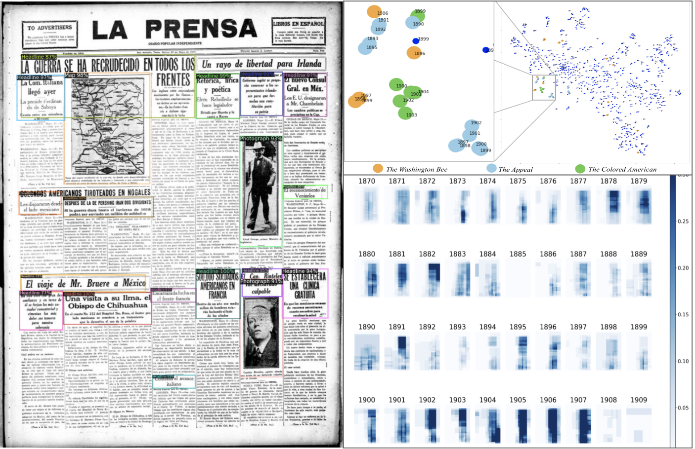

Welcome
loading....
I’m interested in the intersection of the humanities and technology. The humanities have been asking key questions about how technology shapes the world. Through digital humanities, research in the humanities can leverage new methods to push existing conversations in multiple fields and facilitate new interdisciplinary ones.
I’m a digital humanist trained in Latin American and Caribbean studies now enjoying the chance to be a bit of a generalist and collaborate with brilliant scholars.
Recent examples of collaborative work include the modeling of interdisciplinary work in DH, CS, and periodical studies. With Ben Lee, Sarah Salter, and Jim Casey.

starting....
I am an Assistant Professor and the Digital Scholarship Librarian at the Scholars’ Collaborative, a department offering digital scholarship services in the John C. Hodges Library, University of Tennessee.
Previously, I was a graduate research assistant at the Digital Scholarship Office of LLILAS Benson, junior fellow for the Library of Congress Connecting Communities Digital Initiative, and an intern at the Division of Preservation and Access of the National Endownment for the Humanities.